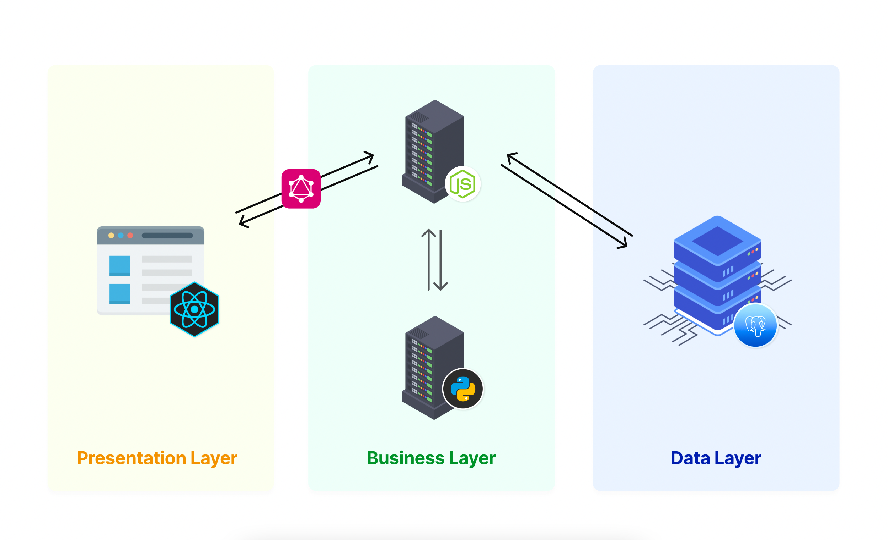
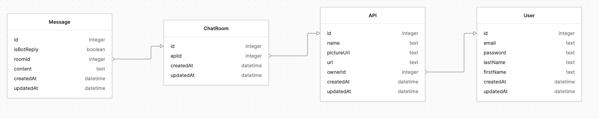

OdinQL is an interactive tool/framework meant to facilitate the communication with GraphQL-powered APIs through natural language constructs. There is a large number of open APIs that could provide precious information to end users, but due to the lack of a intuitive user interface, the data is only accessible to trained individuals, who know how to consume it. Through this tool, we're trying to mitigate this problem, while providing a playground for developers that are trying to learn more about GraphQL.
For the past two years, we have witnessed a major advancement in NLP downstream tasks thanks to contextualized embeddings on webscale data and transfer learning. One of the possible applications of these emerging technologies would be the translation of natural language into GraphQL queries.
GraphQL is a query language for APIs and a runtime for fulfilling those queries, that has gathered huge momentum since it's public release back in 2015. Major players in the IT sector have since adopted it, and discarded their previous approaches. For a full list of companies that are currently using GraphQL, visit the official website
Unfortunately, not everyone likes or knows how to write a GraphQL query to search within a huge dataset. To an untrained user, it would be a difficult task to construct complex queries with GraphQL functions and keywords, thus a system to convert simple information retrieval questions into a corresponding GraphQL query would come in handy to those that are not familiar with it's syntax.
OdinQL's architecture consists of 3 layers: Presentation Layer, Business Layer and last but not least the Data Layer. An overview of the solution is captured in the diagram exposed below. Each component will be described in the following sections of this paper.
The presentation layer consists of a React web application, which will allow the user to:
Based on the above mentioned flows, we can identify 3 main flows/modules, that can be further explored in the Figma prototype.
The user will be asked to either create an account or login when he access the OdinQL platform. Upon providing proper credentials, the user will receive a JWT token that will allow him to perform certain actions, exposed by the business layer.
Each authenticated user will be able to add multiple APIs to the personal collection. In order to successfully add a new API, the user will need to provide proper configuration for the given GraphQL API(a name, the endpoint URL, and optionally a picture/logo for easy identification).
The APIs will be displayed on the Homepage/Dashboard, allowing to user to enter the playground and perform queries/mutations using natural language constructs.
When the user enters the Playground, an introspection query is sent to the API, in order to retrieve the main entities/actions exposed by it. These resources will be displayed in a specific section of the screen, using RDF data model to better illustrate and link them together.
The playground will also contain a section for displaying the data retrieved from the API, in the form of a dynamic grid.
Upon landing on this sandbox, the user will be able to introduce an input inside a chat-like component, where a chatbot will reply, translating the input in a GraphQL query/mutation string. The user will then decide if he wants to run the given GraphQL document or not. If the document is being successfully interpreted by the API, the results will be displayed in the above mentioned grid, if not an error will be displayed.
The business layer consits of 2 micro-services, a NodeJS server that will act as an orchestrator and a Flask(Python) service, which will handle the translation of a given command into a valid GraphQL document.
The orchestrator service will expose a GraphQL API that will be consumed by the React application described in the previous section. It will also be responsible of the communication with the database server.
One of the main responsabilities of this server application will be to authenticate and authorize the requests coming from the client app. It will handle this job, using a JSON Web Token, which will be generated when a user logs in, and further provided with every other request, through the Authorization header.
For the database communication, the server will rely on Prisma ORM. And will implement a middleware for the encryption/decryption of the data, due to GDPR concerns.
The main entities and actions exposed by the API are described in the following schema:
type User {
id: Int!
firstName: String
lastName: String
email: String!
apis: [API]
}
type API {
id: Int!
name: String
pictureUrl: String
url: String!
owner: User
chatRoom: ChatRoom
}
type ChatRoom {
id: Int!
api: API
messages: [Message]
}
type Message {
id: Int!
isBotReply: Boolean!
content: String!
room: ChatRoom
}
type AuthPayload {
accessToken: String
user: User
}
type InvalidUser {
message: String!
}
type UserAlreadyExists {
message: String!
}
union LoginResult = AuthPayload | InvalidUser
union SignupResult = AuthPayload | UserAlreadyExists
type Query {
getCurrentUser: User
getUserApis: API
getApi(apiId: Int!): API
getChatRoomMessages(roomId: Int!): Message
getApiChatRoom(apiId: Int!): ChatRoom
}
type Mutation {
signup(
firstName: String
lastName: String
email: String!
password: String!
): SignupResult
login(email: String!, password: String!): LoginResult
addApi(url: String!, pictureUrl: String, name: String): API
updateApi(id: Int!, url: String, name: String): API
deleteApi(id: Int!): API
sendMessage(content: String!, roomId: Int!): Message
}
The NLP service will be developed using Flask framework for Python. It will expose a single endpoint where the Orchestrator service will send the natural language input in order to be translated into a GraphQL document.
Once it receives the user's input, the NLP service will be responsible of:
The result obtained upon processing, will be send to the Orchestrator service which will then send it to the React Application, in order to be displayed to the user.
The data layer is represented by a PostgreSQL server. The communication with the server will be done through Prisma ORM, which will also generate database migrations when needed. Prisma will also provide a set of security features, meant to prevent SQL injection attacks.
The database structure can be observed in the following diagram: 